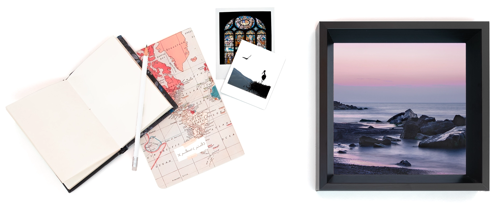

About
Me

Having graduated in biomedical engineering, I worked in the medical equipment industry for a few years. However, it didn't satisfy my passion for creative work. So, I started discovering other areas and finally founded my studio. Over the years I worked as a self-employed digital artist, I taught myself commercial photography, graphic design, animation, and video creation. Then in 2018, to experience more collaborative work, I joined a medical equipment company as a marketing and design expert. This work shift brought me the opportunity to learn more about user-centric design, where I helped a development team test and brush up on the design of the CRM system and onboard all the departments in the company. I also collaborated on the overhaul of the company's website and improved its online presence. I continued this path on my next job, where I designed a workflow management system from scratch for a technical service provider company.
I got increasingly fascinated by UX-UI design when I realized that it perfectly integrates my engineering mindset with my creative flair. This interest eventually brought me to Vancouver to pursue my studies in this area. After cooperating as a UX-UI Designer in three comprehensive academic projects at Langara College and working on several design studies, now my experience is complemented by my academic knowledge of UX and I'm competent to take on new challenges in the industry. I'm passionate about researching human behaviors and experiences and innovating to facilitate their paths. Also, I strive to stay up-to-date with industry technology and trends and continuously improve my work, to bring a unique value to the teams I work with. Let's connect, collaborate, and craft meaningful journeys together.
My Interests

Travelling and adventure are inseparable parts of my life. I'm into camping and mountaineering. I believe in this quote from Paulo Coelho that says:
“ If you think adventure is dangerous, try routine - it's lethal.”
Over the past years, I integrated my adventurous instinct with my passion for telling stories through visuals, and I created a personal photo archive of travel pictures. So far, I've participated in some photo exhibitions and have my photos published as mentioned below:
Photography Exhibitions:- “1PIX 4th Photo Group Exhibition”, Iranian Artists Forum, Tehran-Iran, January 2016
- “The Melody Of Nature”, IRIB Gallery, Tehran-Iran, January 2016
- “The Extremity Of Earth”, Mehr Gallery, Tehran-Iran, November/ December 2015
- Landscape Photography Magazine, 2021
- 1PIX Photo Book, 2016
- Baban Graphic Years, 2015